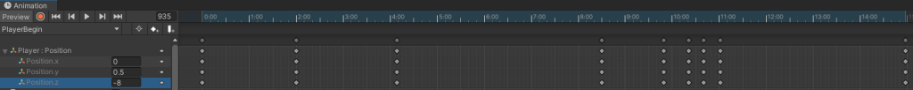
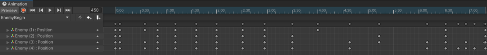

Een moderne hercreatie van de arcade klassieker, gebouwd in Unity.
Ik werd uitgedaagd door mijn vrienden om zo snel mogelijk een Pacman-kloon te maken. Hoewel er nog een paar functies ontbreken, is de basis van de gameplay volledig functioneel!
De KeyInput zijn: WASD, pijltjes en een joystick. Ik gebruik Unity's nieuwe Input System in combinatie met een Rigidbody voor soepele bewegingen.
using UnityEngine;
using UnityEngine.InputSystem;
[SelectionBase]
public class PlayerMovement : MonoBehaviour
{
private Rigidbody _Rigidbody;
private InputAction _MoveAction;
private PlayerInput _PlayerInput;
[SerializeField] private float _PlayerSpeed;
private void Start()
{
_PlayerInput = GetComponent<PlayerInput>();
_MoveAction = _PlayerInput.actions.FindAction("Move");
_Rigidbody = GetComponent<Rigidbody>();
}
private void Update()
{
CalculateMovement();
}
private void CalculateMovement()
{
Vector2 direction = _MoveAction.ReadValue<Vector2>().normalized;
Vector3 movement = new Vector3(direction.x, 0f, direction.y);
_Rigidbody.velocity = movement * _PlayerSpeed;
}
}Om ervoor te zorgen dat we de pellets kunnen eten is er een simpel script voor geschreven.
using UnityEngine;
public class CollectibleHandler : MonoBehaviour
{
private void OnTriggerEnter(Collider other)
{
if (other.CompareTag("Coin"))
{
GameManager.Instance.GetPointValue(other.GetComponent<CollectibleObject>().GetPoints());
Destroy(other.gameObject);
}
}
}Dit script laat zien hoe ik de health van de speler implementeer en communiceer met de GameManager.
using UnityEngine;
public class PlayerHealth : MonoBehaviour
{
public void ChangeHealth(int Damage)
{
GameManager.Instance.PlayerHasDied = true;
GameManager.Instance.Lives -= Damage;
GameManager.Instance.HandleChangeHealth(this.gameObject);
}
}Voor de enemies heb ik een EnemyManager die ze beheert bij het begin van het spel, inclusief een start-vertraging.
using MyBox;
using UnityEngine;
using UnityEngine.AI;
using System.Collections;
public class EnemyManager : Singleton<EnemyManager>
{
public float EnemyWaitTime;
public GameObject[] Enemies;
private void Awake()
{
InitializeSingleton(false);
StartSendingEnemies();
}
private void StartSendingEnemies()
{
StartCoroutine(SendEnemiesWithDelay());
}
private IEnumerator SendEnemiesWithDelay()
{
foreach (GameObject enemy in Enemies)
{
yield return new WaitForSeconds(EnemyWaitTime);
enemy.GetComponent<NavMeshAgent>().enabled = true;
enemy.GetComponent<EnemyMovement>().CanMove = true;
}
}
}De beweging van de spoken wordt aangestuurd door Unity's NavMesh systeem om het doel (de speler) te vinden.
using MyBox;
using UnityEngine;
using UnityEngine.AI;
[SelectionBase] [RequireTag("Enemy")]
public class EnemyMovement : MonoBehaviour
{
private NavMeshAgent _EnemyNavmeshAgent;
public bool CanMove = false;
[SerializeField] private GameObject _Player;
[SerializeField] private string _PlayerString;
private void Start()
{
_EnemyNavmeshAgent = GetComponent<NavMeshAgent>();
FindPlayerByTag(_PlayerString);
}
private void Update()
{
if (CanMove) GoToPlayer();
}
public void GoToPlayer() => GoToDestination(_Player.transform);
private void FindPlayerByTag(string tag)
{
_Player = GameObject.FindGameObjectWithTag(tag);
}
private void GoToDestination(Transform destination)
{
_EnemyNavmeshAgent.SetDestination(destination.position);
}
}Wanneer een spook de speler raakt, wordt er schade aangericht via de PlayerHealth component.
using UnityEngine;
using System.Collections;
public class EnemyAttack : MonoBehaviour
{
private bool _Attacked = false;
[SerializeField] private float _AttackCooldown = 0.5f;
private void OnTriggerEnter(Collider other)
{
if (other.CompareTag("Player") && _Attacked == false)
{
_Attacked = true;
other.GetComponent<PlayerHealth>().ChangeHealth(1);
StartCoroutine(ResetAttackCoroutine());
}
}
private IEnumerator ResetAttackCoroutine()
{
yield return new WaitForSeconds(_AttackCooldown);
_Attacked = false;
}
}Voor de intro sequentie gebruik ik 2 verschillende animaties wat de positie van de spoken en speler aanpast.

